Diffusion versus Direct: Two Routes to the Harmonic Extension
A pinned cellular sheaf defines one harmonic formation $q^\star$. There are two ways to fly a fleet onto it, and this example benchmarks them against each other.
Diffusion is the decentralized law of Heterogeneous Multi-Agent Multi-Target Tracking using Cellular Sheaves (eq. 4 and 5). Each agent feeds back its own sheaf disagreement on every tick:
\[u = -k\, g^{+}\eta, \qquad \eta = \mathcal{H}q - Bp .\]
Direct solves the harmonic extension first, then tracks the delivered reference locally:
\[u = -k\, g^{+}\!\left(q - q^\star\right), \qquad q^\star = \mathcal{H}^{-1}Bp .\]
The two laws solve the same linear system
It is worth being precise about what Diffusion does, because it is easy to read it as a heuristic alongside a solver. Substituting the residual into the control law and the control law into the plant gives, for one tick of step $\Delta t$,
\[q \;\leftarrow\; q - k\,\Delta t\,\bigl(\mathcal{H}q - Bp\bigr) \;=\; \bigl(I - k\,\Delta t\,\mathcal{H}\bigr)q + k\,\Delta t\,Bp .\]
That is Richardson iteration on $\mathcal{H}q^\star = Bp$ with step size $k\,\Delta t$. Diffusion is an unpreconditioned first-order iterative solver for exactly the system that Direct factors. It converges to $q^\star$ rather than computing it, and three consequences follow that the rest of this page measures:
- The error contracts by the spectral radius of $I - k\,\Delta t\,\mathcal{H}$, so the tick count scales with $\kappa(\mathcal{H})$.
- The iteration is matrix-free. $\mathcal{H}$ is applied by neighbour sums and is never assembled, so there is nothing to store.
- The iterate is the fleet's physical position. Diffusion does not hold a copy of $q^\star$ anywhere, because the formation itself is the iterate.
Direct takes the other classical route: a sparse Cholesky factorization of $\mathcal{H}$, reused across solves. The comparison below is therefore the familiar one between an iterative matrix-free method and a direct factorization, carried out on a control problem where the iterative method's iterate is made of aircraft.
using CellularSheaves
using CellularSheaves.ControlSheaves.CoordinationBenchmarks
using CellularSheaves.ControlSheaves.CoordinationProfiling
using LinearAlgebra
using Markdown
using Printf
using Plots
default(framestyle = :box, grid = true, gridalpha = 0.18, gridstyle = :dot,
titlefontsize = 10, guidefontsize = 9, legendfontsize = 8, tickfontsize = 8,
markerstrokewidth = 0, size = (720, 380))
comma(v) = replace(string(v), r"(?<=\d)(?=(\d{3})+$)" => ",")
fmt_bytes(b) = b >= 1_048_576 ? @sprintf("%.1f MB", b / 1_048_576) :
b >= 1024 ? @sprintf("%.1f kB", b / 1024) : "$(comma(b)) B"fmt_bytes (generic function with 1 method)Winning cells are shaded green in every table below.
function bench_table(headers, rows)
io = IOBuffer()
print(io, "<table class=\"bench\"><thead><tr>")
for h in headers
print(io, "<th>", h, "</th>")
end
print(io, "</tr></thead><tbody>")
for (cells, wins) in rows
print(io, "<tr>")
for (c, w) in zip(cells, wins)
print(io, w ? "<td class=\"win\">" : "<td>", c, "</td>")
end
print(io, "</tr>")
end
print(io, "</tbody></table>")
return HTML(String(take!(io)))
end
nowin(n) = falses(n)nowin (generic function with 1 method)Both laws share the harmonic fixed point
Diffusion drives $\eta \to 0$, and by Lemma 1 of the paper $\eta$ vanishes exactly at the harmonic extension. The two laws therefore select the same formation, which has to hold before any comparison of how they get there means anything.
scenario = coordination_scenario(:chain; size_parameter = 32)
plan = direct_plan(scenario)
targets = [2.2 -2.2; 0.0 0.0]
qstar = harmonic_reference(plan, targets)
eta = zeros(length(qstar))
diffusion_residual!(eta, scenario, qstar, targets)
@printf("residual at Direct's solution: ‖η(q*)‖∞ = %.2e\n", norm(eta, Inf))residual at Direct's solution: ‖η(q*)‖∞ = 8.88e-16
The cached tree solve is also checked against the library's canonical harmonic_extension, which rebuilds the blocks and refactors on every call.
oracle = CoordinationBenchmarks.harmonic_reference_oracle(scenario, targets)
@printf("cached tree solve versus harmonic_extension: %.2e\n", norm(qstar - oracle, Inf))cached tree solve versus harmonic_extension: 4.00e-15
Why the transients differ
Substituting each law into the tracking error gives
\[\dot e_{\mathrm{Diffusion}} = -k\mathcal{H}e \qquad\text{versus}\qquad \dot e_{\mathrm{Direct}} = -k e .\]
Diffusion inherits the sheaf spectrum and Direct does not. Two quantities follow, and between them they explain every number on this page.
spec = spectral_summary(scenario)
@printf("λ_min = %.4f, λ_max = %.3f, κ(ℋ) = %.1f\n",
spec.minimum, spec.maximum, spec.condition)λ_min = 0.0091, λ_max = 3.991, κ(ℋ) = 440.7
$\lambda_{\min}$ is set by how much of the fleet senses a target, which is the Dirichlet boundary, and $\lambda_{\max}$ by graph degree. Diffusion is squeezed at both ends: its slowest mode decays at $k\lambda_{\min}$, while a zero-order hold caps its gain at $2/(\Delta t\,\lambda_{\max})$. Its settling time therefore scales with the ratio.
DT = 0.02
@printf("deployable gain ceiling: Diffusion %.1f, Direct %.1f\n",
stable_gain_ceiling(:diffusion, scenario, DT),
stable_gain_ceiling(:direct, scenario, DT))deployable gain ceiling: Diffusion 25.1, Direct 100.0
What is counted, and to whom
Fairness is the whole point of this page, so the accounting is stated before the results.
Both laws run from the same initial state, against the same targets, with the same integrator, step size, $g^{+}$ path and plant. The only line that differs is the one producing $u$. Each law runs at safety times its own discrete stability ceiling, because a shared gain would not be neutral: Diffusion's per-mode gain is $k\lambda_i$.
Direct's reported time includes the entire harmonic extension: assembling the blocks, the symbolic analysis, the numeric factorization, the workspace allocation, and every triangular solve. None of it is treated as a free precomputation. The stage tables below show exactly where that time goes, and it is the majority of Direct's budget rather than a rounding error.
Diffusion has no corresponding setup, because there is no matrix to factor. Its cost is the ticks it takes to converge.
Communication is charged separately, in half-duplex slots, since wall-clock on one machine says nothing about radio traffic. Diffusion pays $\Delta$ slots on every tick; Direct pays one gather and one scatter over the elimination tree, once per solve.
Three scenarios
The two laws differ in one number, closed-loop bandwidth, but that shows up differently depending on the task. Three tasks on three formations, each run under both laws.
track = coordination_scenario(:chain; size_parameter = 16)
@printf("Diffusion bandwidth kλ_min = %.3f rad/s\n", tracking_bandwidth(:diffusion, track; dt = DT))
@printf("Direct bandwidth k = %.3f rad/s\n", tracking_bandwidth(:direct, track; dt = DT))Diffusion bandwidth kλ_min = 0.343 rad/s
Direct bandwidth k = 40.000 rad/s
Against a moving reference the two error systems are
\[\dot e_{\mathrm{diff}} = -k\mathcal{H}e - \dot q^\star , \qquad \dot e_{\mathrm{dir}} = -k e - \dot q^\star ,\]
two stable filters driven by the same $\dot q^\star$. Neither reaches zero error while the targets move. Each settles to a lag of order $\lVert\dot q^\star\rVert$ over its own bandwidth. Diffusion tracks perfectly well, from further behind.
Scenario 1: formation assembly
A 16-agent chain, scattered well away from its harmonic formation, with the targets held still. This isolates one question: how long does it take to arrive at all?
assembly = coordination_scenario(:chain; size_parameter = 16)
asm_diff = rollout_coordination(:diffusion, assembly; dt = DT, mode = :static,
horizon = 40.0, spread = 1.6)
asm_dir = rollout_coordination(:direct, assembly; dt = DT, mode = :static,
horizon = 40.0, spread = 1.6)
settle_tick(r; frac = 0.01) =
something(findfirst(<=(frac * r.errors[1]), r.errors), length(r.errors))
@printf("ticks to within 1%% of the formation: Diffusion %d, Direct %d\n",
settle_tick(asm_diff), settle_tick(asm_dir))ticks to within 1% of the formation: Diffusion 436, Direct 4
Both panels below are at the instant Direct has finished.
plot(plot(asm_diff, settle_tick(asm_dir) + 2), plot(asm_dir, settle_tick(asm_dir) + 2);
layout = (1, 2), size = (1280, 480))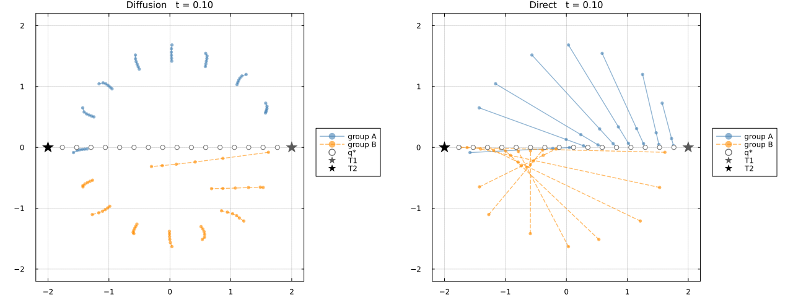
Filled markers are agents coloured by the target they escort, open circles are the harmonic references delivered to them, and stars are the targets. Direct is on station. Diffusion has barely left its scattered start, because information spreads one hop per tick along the chain.
animate_coordination(asm_diff, asm_dir;
filename = "scenario_assembly.gif", frames = 1:700, frame_step = 8, fps = 15)
nothing # hide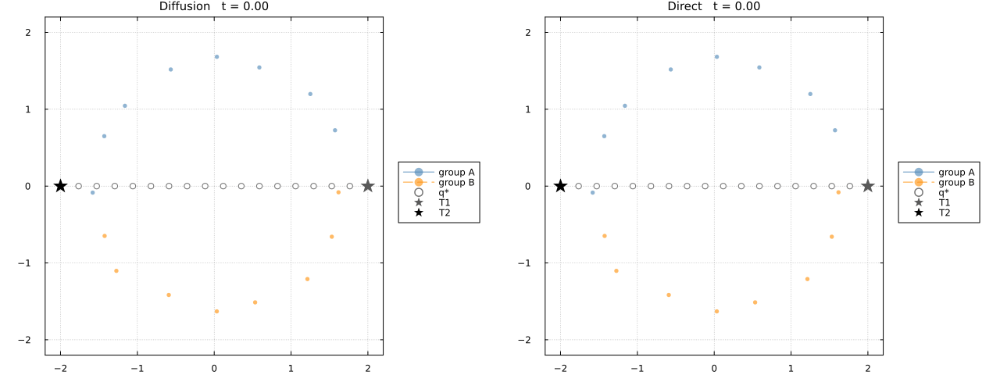
plot(asm_diff.times, asm_diff.errors; yscale = :log10, color = :steelblue, linewidth = 2,
label = "Diffusion", xlabel = "time (s)", ylabel = "‖q − q*‖ / √N",
title = "Scenario 1: formation assembly (16-agent chain, static targets)",
legend = :topright)
plot!(asm_dir.times, asm_dir.errors; color = :darkorange, linewidth = 2, label = "Direct")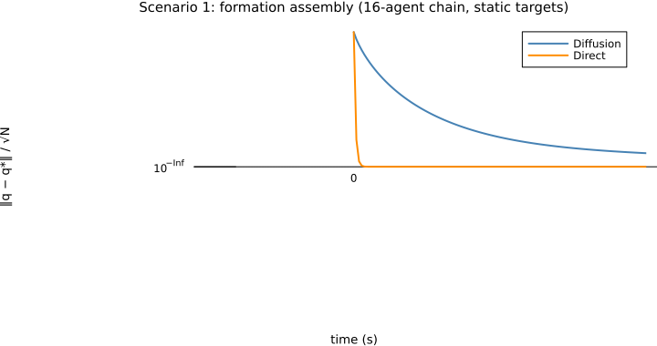
Scenario 2: steady orbit tracking
A 4x4 grid escorting two targets that circle at a constant rate. The reference never stops moving, so neither law converges. Each holds a steady lag set by its bandwidth.
orbit = coordination_scenario(:grid; size_parameter = 4)
orb_diff = rollout_coordination(:diffusion, orbit; dt = DT, mode = :orbit)
orb_dir = rollout_coordination(:direct, orbit; dt = DT, mode = :orbit)
@printf("steady lag: Diffusion %.3e, Direct %.3e, ratio %.1f\n",
orb_diff.errors[end], orb_dir.errors[end],
orb_diff.errors[end] / orb_dir.errors[end])
plot(plot(orb_diff, length(orb_diff.times)), plot(orb_dir, length(orb_dir.times));
layout = (1, 2), size = (1280, 480))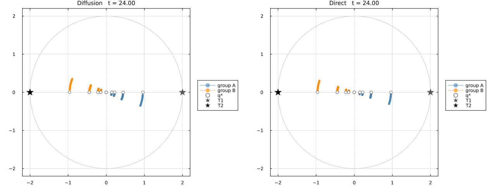
The gap between each agent and its own open circle is the tracking error. Under Diffusion the grid trails its reference around the orbit; under Direct the two coincide.
animate_coordination(orb_diff, orb_dir;
filename = "scenario_orbit.gif", frame_step = 6, fps = 15)
nothing # hide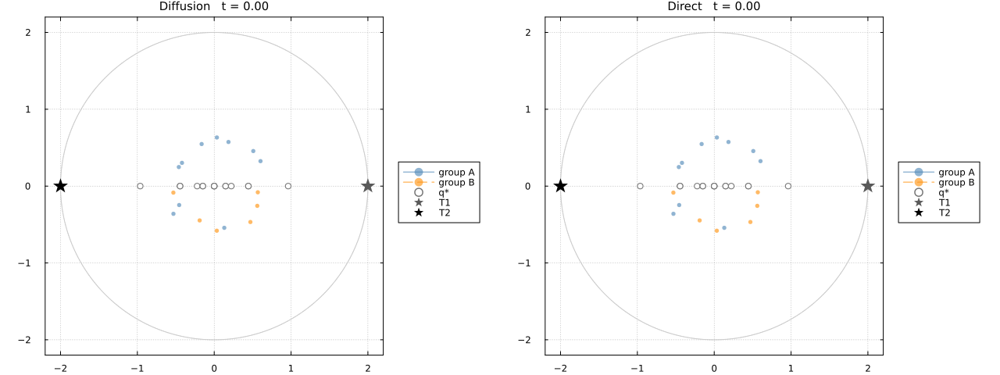
How far behind depends on how fast the targets move. Sweeping the orbit period shows the quasi-static regime appearing for both laws: both lags fall in proportion to target speed and the ratio between them stays put.
speed_rows = map((12.0, 30.0, 90.0, 300.0, 900.0)) do period
re = rollout_coordination(:diffusion, track; dt = DT, period)
ra = rollout_coordination(:direct, track; dt = DT, period)
tail(r) = maximum(r.errors[(end - 50):end])
(period, 2pi / period, tail(re), tail(ra), tail(re) / tail(ra))
end
bench_table(["orbit period", "ω (rad/s)", "Diffusion lag", "Direct lag", "ratio"],
[((@sprintf("%.0f s", r[1]), @sprintf("%.4f", r[2]), @sprintf("%.2e", r[3]),
@sprintf("%.2e", r[4]), @sprintf("%.1f×", r[5])),
(false, false, false, true, false)) for r in speed_rows])HTML{String}("<table class=\"bench\"><thead><tr><th>orbit period</th><th>ω (rad/s)</th><th>Diffusion lag</th><th>Direct lag</th><th>ratio</th></tr></thead><tbody><tr><td>12 s</td><td>0.5236</td><td>3.33e-01</td><td class=\"win\">1.42e-02</td><td>23.5×</td></tr><tr><td>30 s</td><td>0.2094</td><td>1.41e-01</td><td class=\"win\">5.68e-03</td><td>24.8×</td></tr><tr><td>90 s</td><td>0.0698</td><td>4.74e-02</td><td class=\"win\">1.89e-03</td><td>25.0×</td></tr><tr><td>300 s</td><td>0.0209</td><td>1.42e-02</td><td class=\"win\">5.68e-04</td><td>25.0×</td></tr><tr><td>900 s</td><td>0.0070</td><td>4.74e-03</td><td class=\"win\">1.89e-04</td><td>25.1×</td></tr></tbody></table>")Direct's lag is small but not zero, and it shrinks with target speed exactly as Diffusion's does. Slow the targets enough and both laws hold the formation tightly. The difference is only ever how slow is slow enough.
Scenario 3: target reassignment
A 16-agent ring orbiting normally until, half-way through the run, the targets jump to opposite stations. That is a step in the reference. Both laws take the same instantaneous hit, so this measures recovery rate rather than steady-state offset.
swap = coordination_scenario(:ring; size_parameter = 16)
mvr_diff = rollout_coordination(:diffusion, swap; dt = DT, mode = :maneuver)
mvr_dir = rollout_coordination(:direct, swap; dt = DT, mode = :maneuver)
function recovery(r; threshold = 0.15)
peak = argmax(r.errors)
back = findfirst(<=(threshold), r.errors[peak:end])
return (r.errors[peak], back === nothing ? -1 : back)
end
pk_d, back_d = recovery(mvr_diff)
pk_r, back_r = recovery(mvr_dir)
@printf("peak error: Diffusion %.2f, Direct %.2f (the step hits both equally)\n", pk_d, pk_r)
@printf("ticks back under 0.15: Diffusion %d, Direct %d\n", back_d, back_r)
plot(plot(mvr_diff, argmax(mvr_diff.errors) + 8), plot(mvr_dir, argmax(mvr_dir.errors) + 8);
layout = (1, 2), size = (1280, 480))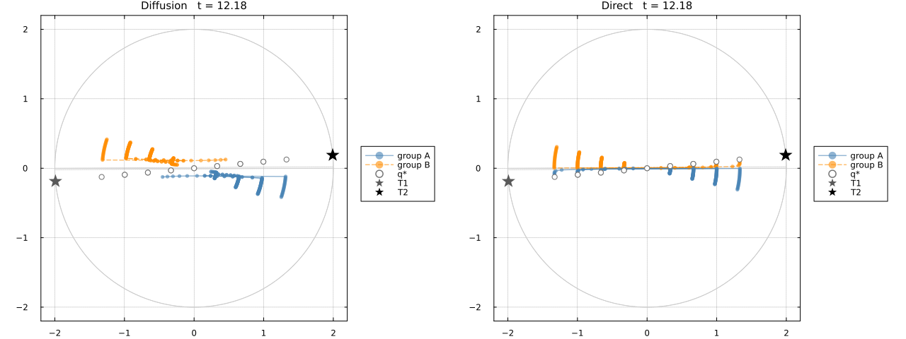
Direct has re-formed on the new stations while Diffusion is still strung out between the old and new ones.
animate_coordination(mvr_diff, mvr_dir;
filename = "scenario_maneuver.gif", frame_step = 6, fps = 15)
nothing # hide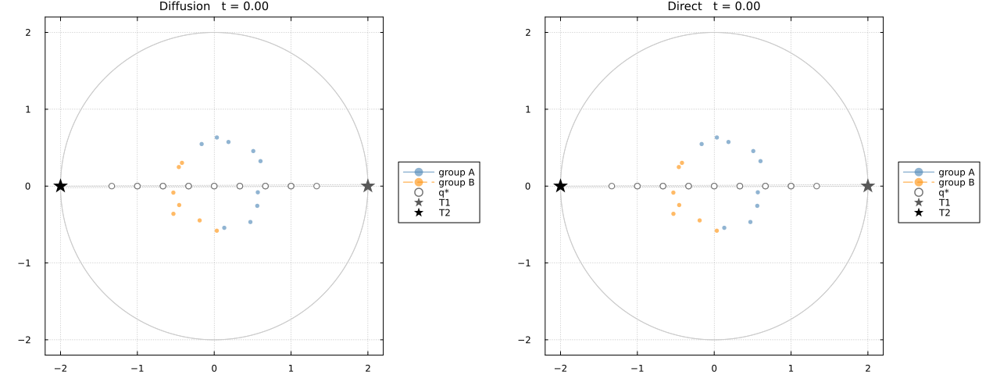
plot(mvr_diff.times, mvr_diff.errors; yscale = :log10, color = :steelblue, linewidth = 2,
label = "Diffusion", xlabel = "time (s)", ylabel = "‖q − q*‖ / √N",
title = "Scenario 3: target reassignment (16-agent ring)", legend = :right)
plot!(mvr_dir.times, mvr_dir.errors; color = :darkorange, linewidth = 2, label = "Direct")
vline!([mvr_diff.times[argmax(mvr_diff.errors)]]; color = :gray45, linestyle = :dash,
label = "reassignment")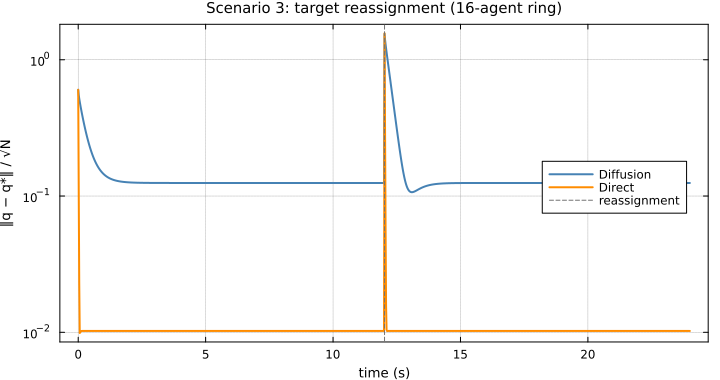
Both spike to the same height. The difference is entirely in the decay afterwards, which is the $k\lambda_{\min}$ against $k$ story again, now visible as a transient.
Is the comparison filtered?
A filter on one law and not the other would manufacture exactly this kind of lag gap. Neither law is filtered above. Both are memoryless proportional feedback on the same current target data, and neither carries filter state.
To settle it, rollout_coordination can apply a first-order command lag $\epsilon\dot v = -v + u$, $\dot q = v$, identically to both laws.
filter_rows = map((0.0, 0.05, 0.15, 0.30)) do eps
re = rollout_coordination(:diffusion, track; dt = DT, epsilon = eps)
ra = rollout_coordination(:direct, track; dt = DT, epsilon = eps)
tail(r) = maximum(r.errors[(end - 50):end])
(eps, tail(re), tail(ra), tail(re) / tail(ra))
end
bench_table(["command filter", "Diffusion lag", "Direct lag", "ratio"],
[((r[1] == 0 ? "none (both unfiltered)" : @sprintf("ε = %.2f (both)", r[1]),
@sprintf("%.3e", r[2]), @sprintf("%.3e", r[3]), @sprintf("%.1f×", r[4])),
(false, false, true, false)) for r in filter_rows])HTML{String}("<table class=\"bench\"><thead><tr><th>command filter</th><th>Diffusion lag</th><th>Direct lag</th><th>ratio</th></tr></thead><tbody><tr><td>none (both unfiltered)</td><td>3.330e-01</td><td class=\"win\">1.420e-02</td><td>23.5×</td></tr><tr><td>ε = 0.05 (both)</td><td>3.348e-01</td><td class=\"win\">1.420e-02</td><td>23.6×</td></tr><tr><td>ε = 0.15 (both)</td><td>3.415e-01</td><td class=\"win\">1.425e-02</td><td>24.0×</td></tr><tr><td>ε = 0.30 (both)</td><td>3.539e-01</td><td class=\"win\">1.439e-02</td><td>24.6×</td></tr></tbody></table>")The ratio barely moves. Adding the same actuator lag to both costs each of them a little and the gap between them survives, so it is closed-loop bandwidth rather than an artefact of filtering one side.
Cost to reach the formation
With the targets held still, the question becomes how much each law spends to arrive. Per-tick cost alone misleads: Diffusion's tick is cheap precisely because it does not solve anything, so it needs $O(\kappa)$ of them, while Direct is at $q^\star$ after one solve. settle_to_formation charges each law everything it spends until the fleet is within 0.1% of the harmonic formation.
diffusion_run = settle_to_formation(:diffusion, scenario)
direct_run = settle_to_formation(:direct, scenario)
bench_table(["law", "ticks", "compute", "slots"],
[(("Diffusion", comma(diffusion_run.ticks), @sprintf("%.1f µs", 1e6diffusion_run.seconds),
comma(diffusion_run.slots)), (false, false, false, false)),
(("Direct", comma(direct_run.ticks), @sprintf("%.1f µs", 1e6direct_run.seconds),
comma(direct_run.slots)), (false, true, true, true))])HTML{String}("<table class=\"bench\"><thead><tr><th>law</th><th>ticks</th><th>compute</th><th>slots</th></tr></thead><tbody><tr><td>Diffusion</td><td>2,561</td><td>988.0 µs</td><td>5,122</td></tr><tr><td>Direct</td><td class=\"win\">5</td><td class=\"win\">53.1 µs</td><td class=\"win\">58</td></tr></tbody></table>")The settling transients plot directly.
plot(diffusion_run; title = "Settling on a 32-agent chain (κ ≈ 441)")
plot!(direct_run)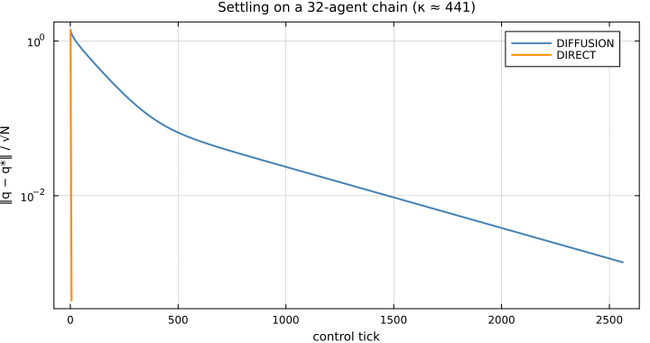
Every stage of both algorithms
This section takes both algorithms apart from the first setup step to the last plant integration, and measures each stage along every axis that decides whether a law can be deployed: time and its spread, heap allocation, arithmetic, matrix entries touched, and the memory an agent must hold between calls.
Stage counts are driven by each law's actual settling tick count on this scenario, so the per-stage costs sum to the end-to-end cost rather than to an arbitrary horizon. With the targets fixed, Direct solves once.
profile_scenario = coordination_scenario(:grid; size_parameter = 6)
diff_settle = settle_to_formation(:diffusion, profile_scenario)
dir_settle = settle_to_formation(:direct, profile_scenario)
diff_stages = stage_profile(:diffusion, profile_scenario; ticks = diff_settle.ticks, solves = 0)
dir_stages = stage_profile(:direct, profile_scenario; ticks = dir_settle.ticks, solves = 1)
@printf("6x6 grid: Diffusion converges in %d ticks, Direct in %d\n",
diff_settle.ticks, dir_settle.ticks)6x6 grid: Diffusion converges in 686 ticks, Direct in 5
Timing is reported as a minimum and a 90th percentile. The spread between them is the honest measure of how much garbage collection and scheduler noise a stage suffers, which a bare minimum hides. Allocation is measured inside a function, because at global scope the boxing of non-constant globals is attributed to the call and reports allocations that the stage never performs.
stage_rows(stages) = [((string(st.stage), st.description, st.cadence, comma(st.calls),
@sprintf("%.3f µs", 1e6st.t_min), @sprintf("%.3f µs", 1e6st.t_p90),
@sprintf("%.1f µs", 1e6 * st.calls * st.t_min),
fmt_bytes(st.bytes), comma(st.allocs), comma(st.flops), comma(st.nonzeros),
fmt_bytes(st.resident)), nowin(12)) for st in stages]
stage_headers = ["stage", "what it does", "cadence", "calls", "min", "p90", "total",
"alloc/call", "allocs", "flop/call", "nonzeros", "per-agent memory"]12-element Vector{String}:
"stage"
"what it does"
"cadence"
"calls"
"min"
"p90"
"total"
"alloc/call"
"allocs"
"flop/call"
"nonzeros"
"per-agent memory"Diffusion, top to bottom. There is no setup: the loop is a neighbour sum and two vector updates.
bench_table(stage_headers, stage_rows(diff_stages))HTML{String}("<table class=\"bench\"><thead><tr><th>stage</th><th>what it does</th><th>cadence</th><th>calls</th><th>min</th><th>p90</th><th>total</th><th>alloc/call</th><th>allocs</th><th>flop/call</th><th>nonzeros</th><th>per-agent memory</th></tr></thead><tbody><tr><td>exchange</td><td>exchange neighbour states</td><td>per tick</td><td>686</td><td>0.000 µs</td><td>0.000 µs</td><td>0.0 µs</td><td>0 B</td><td>0</td><td>0</td><td>0</td><td>64 B</td></tr><tr><td>residual</td><td>accumulate disagreement</td><td>per tick</td><td>686</td><td>0.550 µs</td><td>0.572 µs</td><td>377.3 µs</td><td>0 B</td><td>0</td><td>488</td><td>122</td><td>80 B</td></tr><tr><td>control</td><td>scale by the gain</td><td>per tick</td><td>686</td><td>0.029 µs</td><td>0.040 µs</td><td>19.9 µs</td><td>0 B</td><td>0</td><td>72</td><td>0</td><td>16 B</td></tr><tr><td>integrate</td><td>integrate the plant</td><td>per tick</td><td>686</td><td>0.029 µs</td><td>0.040 µs</td><td>19.9 µs</td><td>0 B</td><td>0</td><td>144</td><td>0</td><td>16 B</td></tr></tbody></table>")Direct, top to bottom. The first four stages are the harmonic extension, and they are charged in full.
bench_table(stage_headers, stage_rows(dir_stages))
diff_tot = stage_totals(diff_stages)
dir_tot = stage_totals(dir_stages)
setup_share = 100 * sum(st.t_min for st in dir_stages if st.cadence == "once") /
sum(st.calls * st.t_min for st in dir_stages)
bench_table(["law", "total compute", "heap allocated", "allocations", "arithmetic",
"per-agent memory", "fleet memory"],
[(("Diffusion", @sprintf("%.1f µs", 1e6diff_tot.seconds), fmt_bytes(diff_tot.bytes),
comma(diff_tot.allocs), @sprintf("%.2f Mflop", diff_tot.flops / 1e6),
fmt_bytes(diff_tot.resident), fmt_bytes(diff_tot.resident_fleet)),
(false, false, true, true, false, true, true)),
(("Direct", @sprintf("%.1f µs", 1e6dir_tot.seconds), fmt_bytes(dir_tot.bytes),
comma(dir_tot.allocs), @sprintf("%.2f Mflop", dir_tot.flops / 1e6),
fmt_bytes(dir_tot.resident), fmt_bytes(dir_tot.resident_fleet)),
(false, true, false, false, true, false, false))])
@printf("The harmonic extension is %.0f%% of Direct's total compute on this scenario.\n",
setup_share)The harmonic extension is 89% of Direct's total compute on this scenario.
Four things fall out of these tables, and they do not all point the same way.
The harmonic extension dominates Direct's cost. It is the large majority of Direct's budget here, not a negligible precomputation. Direct wins the end-to-end comparison in spite of paying for the factorization, not by having it excused. A per-tick view would report the opposite, because it amortises a one-time cost over a horizon Direct never runs for: with the targets fixed, Direct converges in a handful of ticks.
Diffusion performs far more arithmetic and is still slower in wall-clock. The flop counts and the timings tell opposite stories. Diffusion's operations are cheap neighbour sums, of which it needs $O(\kappa)$ rounds; Direct's are dense panel operations on frontal matrices, of which it needs one pass.
Diffusion allocates nothing at all. Zero bytes across every tick, because the iteration is matrix-free and its iterate is the fleet's own position. It can run in a hard-real-time loop with the collector disabled, as written. Direct's allocation happens in the setup stages, which is exactly where a deployment would want it: off the control path, before the mission starts.
Per-agent memory is the treewidth currency again. A diffusion agent holds its own state and its neighbours', which is $O(\text{degree})$ and flat in fleet size. A Direct worker holds its own frontal panel, which is $O(\text{treewidth}^2)$. Neither holds a fleet-wide object, and reporting the whole factor against one agent's working set would compare quantities that live on different machines.
memory_rows = map(((:chain, 32), (:chain, 128), (:grid, 6), (:grid, 10), (:rgg, 128))) do (nm, sp)
sc = coordination_scenario(nm; size_parameter = sp)
ds = stage_profile(:diffusion, sc; ticks = 1, solves = 0, reps = 5)
rs = stage_profile(:direct, sc; ticks = 1, solves = 1, reps = 5)
st = tree_statistics(direct_plan(sc))
(sc, st, stage_totals(ds), stage_totals(rs))
end
bench_table(["topology", "agents", "treewidth", "Diffusion per agent", "Direct per worker",
"Direct fleet total"],
[((sc.label, comma(sc.nagents), string(st.treewidth), fmt_bytes(dt.resident),
fmt_bytes(rt.resident), fmt_bytes(rt.resident_fleet)),
(false, false, false, true, false, false))
for (sc, st, dt, rt) in memory_rows])HTML{String}("<table class=\"bench\"><thead><tr><th>topology</th><th>agents</th><th>treewidth</th><th>Diffusion per agent</th><th>Direct per worker</th><th>Direct fleet total</th></tr></thead><tbody><tr><td>chain</td><td>32</td><td>1</td><td class=\"win\">48 B</td><td>128 B</td><td>8.9 kB</td></tr><tr><td>chain</td><td>128</td><td>1</td><td class=\"win\">48 B</td><td>128 B</td><td>35.1 kB</td></tr><tr><td>grid</td><td>36</td><td>6</td><td class=\"win\">80 B</td><td>1.5 kB</td><td>12.5 kB</td></tr><tr><td>grid</td><td>100</td><td>11</td><td class=\"win\">80 B</td><td>3.8 kB</td><td>40.2 kB</td></tr><tr><td>random geometric</td><td>128</td><td>40</td><td class=\"win\">720 B</td><td>50.0 kB</td><td>216.4 kB</td></tr></tbody></table>")On a chain both are flat in fleet size, and the difference between them is a few dozen bytes. On a random geometric graph the separators are wide and a Direct worker's panel grows with their square. That is the same structural axis that governs its fill and its arithmetic, so it is a real cost of the method rather than an artefact of accounting. The absolute magnitudes are small enough that this axis is unlikely to decide anything at these fleet sizes; it would begin to matter on microcontroller-class nodes or at fleets well beyond the range benchmarked here.
What it would cost on real hardware
Every timing above is single-core, which is symmetric but describes neither deployment. On a real fleet both laws parallelize, and they parallelize very differently.
Diffusion parallelizes almost perfectly across agents: every agent forms its own disagreement from data it already holds, so a tick costs the busiest agent rather than the sum over the fleet. Direct parallelizes across the elimination tree, but only down to its critical path, since independent subtrees factor and substitute concurrently while a chain of supernodes must run in sequence.
Both numbers below are derived from the sheaf and the factor structure, so neither depends on this machine.
cp_diff = critical_path_profile(:diffusion, profile_scenario; ticks = diff_settle.ticks)
cp_dir = critical_path_profile(:direct, profile_scenario; ticks = dir_settle.ticks, solves = 1)
bench_table(["law", "serial arithmetic", "critical-path arithmetic", "available speedup",
"synchronous depth"],
[(("Diffusion", comma(cp_diff.serial_flops), comma(cp_diff.parallel_flops),
@sprintf("%.1f×", cp_diff.speedup), comma(cp_diff.depth)),
(false, false, false, true, false)),
(("Direct", comma(cp_dir.serial_flops), comma(cp_dir.parallel_flops),
@sprintf("%.1f×", cp_dir.speedup), comma(cp_dir.depth)),
(false, true, true, false, true))])HTML{String}("<table class=\"bench\"><thead><tr><th>law</th><th>serial arithmetic</th><th>critical-path arithmetic</th><th>available speedup</th><th>synchronous depth</th></tr></thead><tbody><tr><td>Diffusion</td><td>482,944</td><td>15,092</td><td class=\"win\">32.0×</td><td>686</td></tr><tr><td>Direct</td><td class=\"win\">9,500</td><td class=\"win\">3,814</td><td>2.5×</td><td class=\"win\">18</td></tr></tbody></table>")This is the most important correction on the page, and it cuts against Direct. Diffusion has far more parallelism available, because its work is spread across every agent. Direct has much less, because the elimination tree serializes. Single-core timing therefore overstates Direct's advantage.
After parallelizing both, Direct still leads on arithmetic along the critical path, and it leads by a much wider margin on synchronous depth: a few tree levels traversed twice, against one round per tick for the whole settling time. Latency, not arithmetic, is what separates them on real hardware.
The formation families
The benchmark sweeps twenty topology families, chosen to span the two structural axes that matter: trees and lattices at one end, dense blocks and expanders at the other. Every scenario is a real EuclideanSheaf with identity restriction maps and stalk dimension 2. Blue circles are free agents, red diamonds are pinned targets, and dashed links are the agent-to-target sensing edges that supply the Dirichlet boundary.
atlas_group(specs) = plot(
[plot(coordination_scenario(n; size_parameter = sp)) for (n, sp) in specs]...;
layout = (cld(length(specs), 2), 2), size = (900, 450 * cld(length(specs), 2)),
titlefontsize = 11, top_margin = 4Plots.mm, bottom_margin = 4Plots.mm)atlas_group (generic function with 1 method)Trees have treewidth 1 and no off-diagonal fill, but very different degree profiles.
atlas_group([(:chain, 14), (:star, 14), (:tree, 4), (:caterpillar, 7)])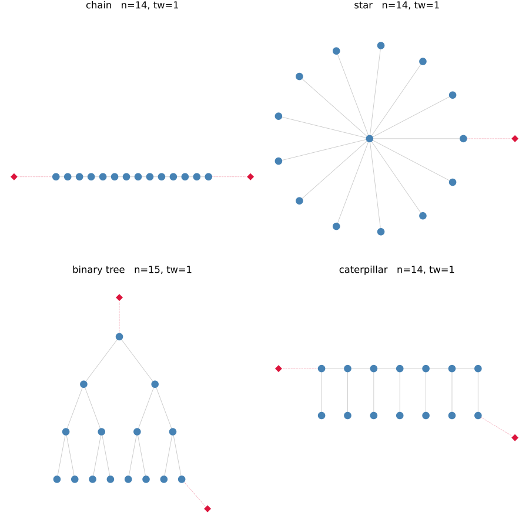
Sparse lattices: treewidth climbs slowly with the width of the strip or sheet.
atlas_group([(:ring, 14), (:ladder, 7), (:prism, 7), (:grid, 4)])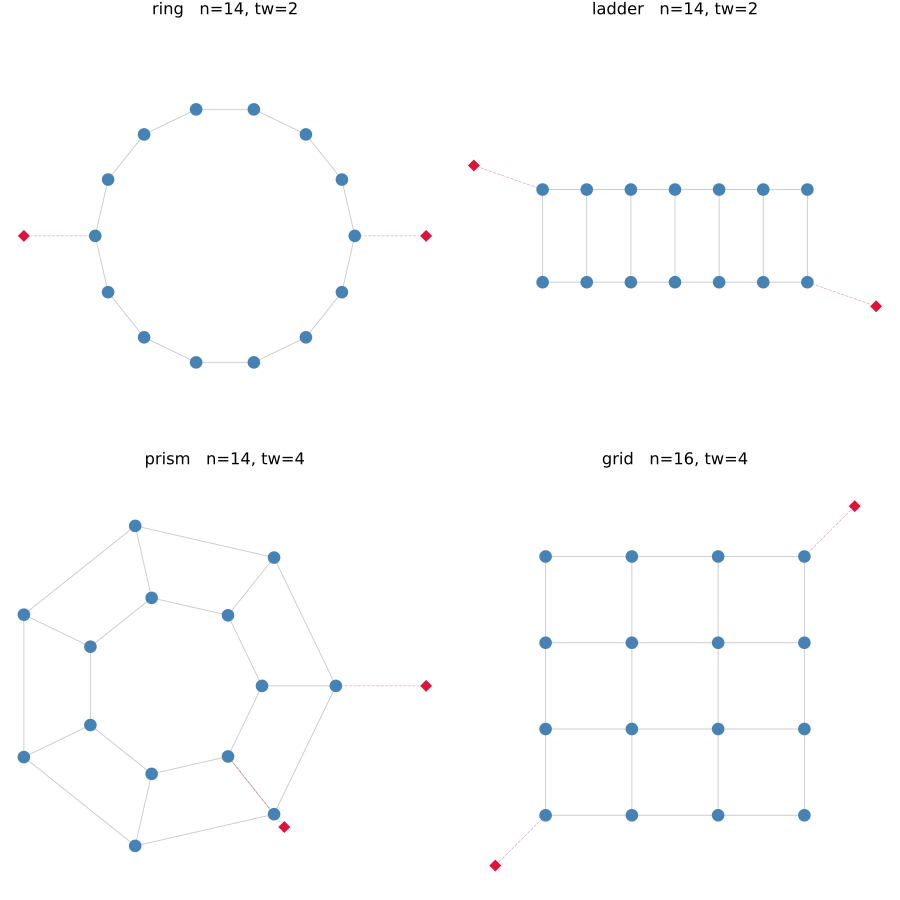
Geometric and networked graphs: proximity models and the classic random networks.
atlas_group([(:torus, 4), (:grid3d, 3), (:rgg, 16), (:smallworld, 16),
(:scalefree, 16), (:expander, 16)])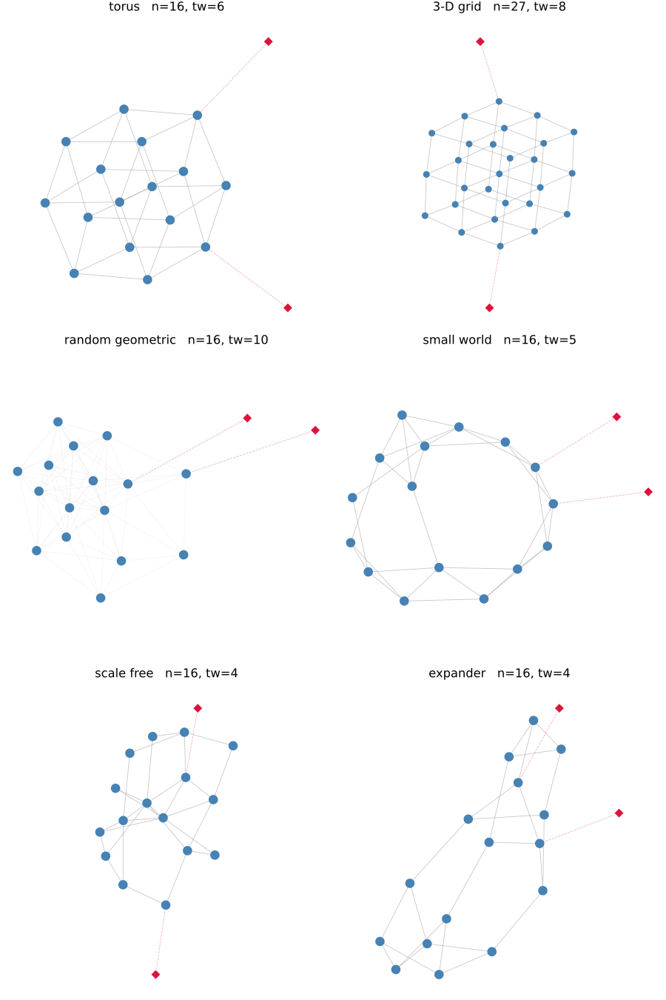
Hubs and dense blocks, where separators get wide and the factor fills in.
atlas_group([(:wheel, 14), (:bipartite, 7), (:barbell, 6), (:lollipop, 6),
(:complete, 10), (:twoclique, 8)])Each panel is titled with its agent count and treewidth. Chain, star, binary tree and caterpillar are all trees despite very different degree profiles. Complete bipartite, complete and the two-clique construction carry the widest separators. That axis turns out to be independent of $\kappa$, which is the point developed below.
Sweeping the topology families
benchmark_coordination runs both laws across all twenty families, three to four sizes each, and both target-coverage regimes. Sparse coverage pins two agents at the extremes; full coverage gives every agent a target edge. Coverage sets $\lambda_{\min}$, so sweeping it as well as the graph turns the comparison from a point into a map. Every cached solve is verified against harmonic_extension before timing.
result = benchmark_coordination()
@printf("%d scenarios, worst oracle residual %.2e\n",
length(result), maximum(r.oracle_residual for r in result))128 scenarios, worst oracle residual 3.77e-14
Ticks to reach the formation
plot(result, :settling)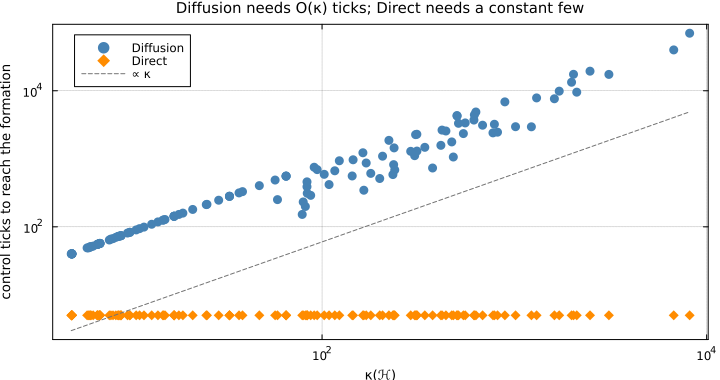
Communication
Diffusion pays $\Delta$ slots on every tick until information has crossed the formation, so its bill is $\text{ticks}\times\Delta$ and inherits the $O(\kappa)$. Direct pays one gather up the elimination tree and one scatter back down, $2\,\mathrm{cp}(T)$ slots, once.
One caveat is enforced in the model rather than left to the reader. $2\,\mathrm{cp}(T)$ counts only messages crossing between supernodes, which presumes each supernode sits on its own worker. On dense graphs the elimination tree collapses to one or two supernodes, meaning a single machine holds the whole factor. That is a centralized solve, not a distributed one, and would otherwise be charged a near-zero slot count. Those cases are charged the centralized $2n$ pigeonhole bound instead.
plot(result, :communication)The advantage, in both currencies
plot(result, :speedup)The map
Plotting every scenario against both structural axes at once, with treewidth on the horizontal and $\kappa$ on the vertical, shows where each law owns the space.
plot(result, :landscape; size = (860, 560))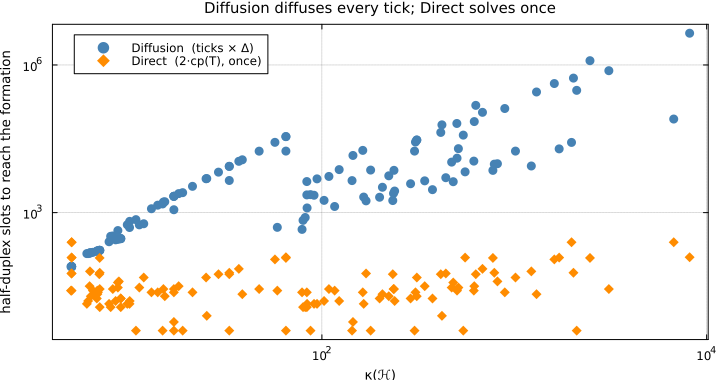
The separation is horizontal rather than diagonal. Diffusion's wins form a band at low $\kappa$ running across the entire treewidth range. Which law is faster is decided by conditioning; treewidth only sets how much Direct's win costs it when it does win.
The full sweep
summary_rows = map(unique(r.name for r in result)) do fam
fr = filter(r -> r.name == fam && r.coverage == :sparse, result.rows)
last(sort(fr; by = r -> r.agents))
end
bench_table(["topology", "agents", "κ(ℋ)", "treewidth", "Diffusion ticks", "Direct ticks",
"Diffusion compute", "Direct compute", "Direct faster", "Direct fewer slots"],
[((r.label, comma(r.agents), @sprintf("%.1f", r.condition), string(r.treewidth),
comma(r.diffusion.ticks), comma(r.direct.ticks),
@sprintf("%.1f µs", 1e6r.diffusion.seconds), @sprintf("%.1f µs", 1e6r.direct.seconds),
@sprintf("%.1f×", r.speedup), @sprintf("%.0f×", r.slot_ratio)),
(false, false, false, false, false, r.speedup >= 1, r.speedup < 1, r.speedup >= 1,
false, false)) for r in summary_rows])HTML{String}("<table class=\"bench\"><thead><tr><th>topology</th><th>agents</th><th>κ(ℋ)</th><th>treewidth</th><th>Diffusion ticks</th><th>Direct ticks</th><th>Diffusion compute</th><th>Direct compute</th><th>Direct faster</th><th>Direct fewer slots</th></tr></thead><tbody><tr><td>chain</td><td>128</td><td>6743.7</td><td>1</td><td>39,851</td><td class=\"win\">5</td><td>58566.4 µs</td><td class=\"win\">208.9 µs</td><td>280.3×</td><td>319×</td></tr><tr><td>star</td><td>64</td><td>8158.9</td><td>1</td><td>70,135</td><td class=\"win\">5</td><td>54546.5 µs</td><td class=\"win\">106.9 µs</td><td>510.4×</td><td>35633×</td></tr><tr><td>binary tree</td><td>63</td><td>504.1</td><td>1</td><td>4,255</td><td class=\"win\">5</td><td>3067.3 µs</td><td class=\"win\">106.6 µs</td><td>28.8×</td><td>491×</td></tr><tr><td>caterpillar</td><td>64</td><td>1226.5</td><td>1</td><td>2,953</td><td class=\"win\">5</td><td>2187.2 µs</td><td class=\"win\">105.2 µs</td><td>20.8×</td><td>138×</td></tr><tr><td>ring</td><td>128</td><td>1984.2</td><td>2</td><td>13,341</td><td class=\"win\">5</td><td>19806.7 µs</td><td class=\"win\">232.3 µs</td><td>85.3×</td><td>107×</td></tr><tr><td>ladder</td><td>64</td><td>774.2</td><td>2</td><td>2,404</td><td class=\"win\">5</td><td>2149.3 µs</td><td class=\"win\">115.4 µs</td><td>18.6×</td><td>60×</td></tr><tr><td>prism</td><td>64</td><td>787.6</td><td>4</td><td>3,218</td><td class=\"win\">5</td><td>2881.1 µs</td><td class=\"win\">135.8 µs</td><td>21.2×</td><td>161×</td></tr><tr><td>grid</td><td>100</td><td>817.5</td><td>11</td><td>2,462</td><td class=\"win\">5</td><td>3862.6 µs</td><td class=\"win\">242.6 µs</td><td>15.9×</td><td>246×</td></tr><tr><td>torus</td><td>64</td><td>375.7</td><td>18</td><td>732</td><td class=\"win\">5</td><td>794.4 µs</td><td class=\"win\">147.1 µs</td><td>5.4×</td><td>163×</td></tr><tr><td>3-D grid</td><td>125</td><td>1014.5</td><td>26</td><td>2,963</td><td class=\"win\">5</td><td>7342.4 µs</td><td class=\"win\">407.7 µs</td><td>18.0×</td><td>370×</td></tr><tr><td>random geometric</td><td>128</td><td>3102.5</td><td>40</td><td>17,393</td><td class=\"win\">5</td><td>215291.0 µs</td><td class=\"win\">690.7 µs</td><td>311.7×</td><td>27332×</td></tr><tr><td>small world</td><td>64</td><td>512.3</td><td>7</td><td>3,323</td><td class=\"win\">5</td><td>3603.5 µs</td><td class=\"win\">145.8 µs</td><td>24.7×</td><td>665×</td></tr><tr><td>scale free</td><td>64</td><td>892.7</td><td>7</td><td>6,865</td><td class=\"win\">5</td><td>7672.6 µs</td><td class=\"win\">145.2 µs</td><td>52.8×</td><td>5435×</td></tr><tr><td>wheel</td><td>64</td><td>2474.8</td><td>3</td><td>19,403</td><td class=\"win\">5</td><td>21733.4 µs</td><td class=\"win\">138.6 µs</td><td>156.8×</td><td>10187×</td></tr><tr><td>complete bipartite</td><td>64</td><td>2111.1</td><td>61</td><td>9,535</td><td class=\"win\">5</td><td>71551.3 µs</td><td class=\"win\">264.0 µs</td><td>271.1×</td><td>76280×</td></tr><tr><td>barbell</td><td>32</td><td>303.2</td><td>15</td><td>1,111</td><td class=\"win\">5</td><td>1925.2 µs</td><td class=\"win\">71.4 µs</td><td>27.0×</td><td>4444×</td></tr><tr><td>lollipop</td><td>32</td><td>619.6</td><td>15</td><td>4,425</td><td class=\"win\">5</td><td>4730.6 µs</td><td class=\"win\">62.0 µs</td><td>76.4×</td><td>2212×</td></tr><tr><td>complete</td><td>36</td><td>683.5</td><td>35</td><td>3,116</td><td class=\"win\">5</td><td>14443.5 µs</td><td class=\"win\">134.2 µs</td><td>107.6×</td><td>1515×</td></tr><tr><td>two cliques</td><td>56</td><td>1615.4</td><td>31</td><td>7,629</td><td class=\"win\">5</td><td>54435.5 µs</td><td class=\"win\">205.9 µs</td><td>264.4×</td><td>3746×</td></tr><tr><td>expander</td><td>128</td><td>616.4</td><td>23</td><td>3,710</td><td class=\"win\">5</td><td>6613.2 µs</td><td class=\"win\">343.3 µs</td><td>19.3×</td><td>428×</td></tr></tbody></table>")One row per family at its largest sparsely-covered size, with the faster law's tick count shaded. Here is how the two coverage regimes split.
sparse_rows = filter(r -> r.coverage == :sparse, result.rows)
full_rows = filter(r -> r.coverage == :full, result.rows)
@printf("sparse coverage: Direct faster in %d of %d, median %.1f×\n",
count(r -> r.speedup >= 1, sparse_rows), length(sparse_rows),
sort([r.speedup for r in sparse_rows])[end ÷ 2])
@printf("full coverage: Direct faster in %d of %d, median %.2f×\n",
count(r -> r.speedup >= 1, full_rows), length(full_rows),
sort([r.speedup for r in full_rows])[end ÷ 2])sparse coverage: Direct faster in 64 of 64, median 13.8×
full coverage: Direct faster in 27 of 64, median 0.80×
Two different currencies: conditioning and treewidth
The two laws are billed by different structural properties of the same graph, and measuring both is what turns the comparison into a map.
Diffusion's cost is spectral, governed by $\kappa(\mathcal H) = \lambda_{\max}/\lambda_{\min}$: degree at one end, target coverage at the other. Direct's cost is combinatorial, governed by the treewidth of the formation graph, which sets the width of the widest frontal matrix and therefore the fill, the arithmetic per solve, and the memory each worker holds.
structure_rows = map(((:chain, 64), (:star, 64), (:grid, 8), (:rgg, 64),
(:twoclique, 32), (:complete, 36), (:expander, 64))) do (name, sp)
s = coordination_scenario(name; size_parameter = sp)
t = tree_statistics(direct_plan(s))
(s.label, s.nagents, spectral_summary(s).condition, t.treewidth, t.fill,
t.offdiagonal_fill, t.depth)
end
bench_table(["topology", "agents", "κ(ℋ)", "treewidth", "factor fill", "off-diagonal",
"tree depth"],
[((r[1], comma(r[2]), @sprintf("%.1f", r[3]), string(r[4]), comma(r[5]),
comma(r[6]), string(r[7])), nowin(7)) for r in structure_rows])HTML{String}("<table class=\"bench\"><thead><tr><th>topology</th><th>agents</th><th>κ(ℋ)</th><th>treewidth</th><th>factor fill</th><th>off-diagonal</th><th>tree depth</th></tr></thead><tbody><tr><td>chain</td><td>64</td><td>1711.7</td><td>1</td><td>512</td><td>248</td><td>62</td></tr><tr><td>star</td><td>64</td><td>8158.9</td><td>1</td><td>512</td><td>248</td><td>2</td></tr><tr><td>grid</td><td>64</td><td>481.6</td><td>8</td><td>1,528</td><td>1,040</td><td>19</td></tr><tr><td>random geometric</td><td>64</td><td>1305.2</td><td>28</td><td>5,456</td><td>2,824</td><td>11</td></tr><tr><td>two cliques</td><td>56</td><td>1615.4</td><td>31</td><td>7,168</td><td>768</td><td>2</td></tr><tr><td>complete</td><td>36</td><td>683.5</td><td>35</td><td>5,184</td><td>0</td><td>1</td></tr><tr><td>expander</td><td>64</td><td>289.1</td><td>13</td><td>1,792</td><td>1,048</td><td>9</td></tr></tbody></table>")Chain and star are both trees, with treewidth 1, yet their $\kappa$ differs by a factor of five. The random geometric graph carries a wide separator at a middling $\kappa$, and the two-clique graph has the worst treewidth in the table with a $\kappa$ comparable to the chain's.
The off-diagonal column is worth reading against the fill column. On the complete graph the elimination tree is a single supernode, so every stored entry sits in the diagonal block and the off-diagonal count is zero, which would look like a free factorization if the diagonal blocks were not counted. They are.
That independence is what makes the comparison interesting rather than circular:
| low $\kappa$ | high $\kappa$ | |
|---|---|---|
| low treewidth | both cheap | Direct's best case: trivial factor, starved Diffusion |
| high treewidth | Direct's worst case: the expander below | expensive for Direct, worse for Diffusion |
Tree depth matters separately: it sets $\mathrm{cp}(T)$ and therefore Direct's slot count. The star has depth 2 and clears in a handful of slots, but its factor lives on a single worker, so a shallow tree means little parallelism rather than a fast distributed solve.
Where Diffusion wins
Every table so far reports sparsely covered formations, and Diffusion loses all of them. That is not the whole picture. Across the full sweep Diffusion takes a substantial minority of scenarios, and they are not scattered at random.
diffusion_wins = sort(filter(r -> r.speedup < 1, result.rows); by = r -> r.speedup)
direct_wins = filter(r -> r.speedup >= 1, result.rows)
@printf("Diffusion faster in %d of %d scenarios\n", length(diffusion_wins), length(result))
@printf(" Diffusion's wins: median κ %.1f, median treewidth %d, %d%% fully covered\n",
sort([r.condition for r in diffusion_wins])[end ÷ 2],
sort([r.treewidth for r in diffusion_wins])[end ÷ 2],
round(Int, 100count(r -> r.coverage === :full, diffusion_wins) / length(diffusion_wins)))
@printf(" Direct's wins: median κ %.1f, median treewidth %d, %d%% fully covered\n",
sort([r.condition for r in direct_wins])[end ÷ 2],
sort([r.treewidth for r in direct_wins])[end ÷ 2],
round(Int, 100count(r -> r.coverage === :full, direct_wins) / length(direct_wins)))Diffusion faster in 37 of 128 scenarios
Diffusion's wins: median κ 6.8, median treewidth 4, 100% fully covered
Direct's wins: median κ 164.9, median treewidth 7, 30% fully covered
The eight widest margins:
bench_table(["topology", "agents", "coverage", "κ(ℋ)", "treewidth", "Diffusion", "Direct",
"Diffusion faster by"],
[((r.label, comma(r.agents), string(r.coverage), @sprintf("%.1f", r.condition),
string(r.treewidth), @sprintf("%.1f µs", 1e6r.diffusion.seconds),
@sprintf("%.1f µs", 1e6r.direct.seconds), @sprintf("%.2f×", 1 / r.speedup)),
(false, false, false, false, false, true, false, false))
for r in diffusion_wins[1:min(8, end)]])HTML{String}("<table class=\"bench\"><thead><tr><th>topology</th><th>agents</th><th>coverage</th><th>κ(ℋ)</th><th>treewidth</th><th>Diffusion</th><th>Direct</th><th>Diffusion faster by</th></tr></thead><tbody><tr><td>ring</td><td>128</td><td>full</td><td>5.0</td><td>2</td><td class=\"win\">92.6 µs</td><td>229.3 µs</td><td>2.48×</td></tr><tr><td>ring</td><td>32</td><td>full</td><td>5.0</td><td>2</td><td class=\"win\">23.5 µs</td><td>57.0 µs</td><td>2.43×</td></tr><tr><td>expander</td><td>128</td><td>full</td><td>6.8</td><td>23</td><td class=\"win\">145.0 µs</td><td>338.0 µs</td><td>2.33×</td></tr><tr><td>chain</td><td>64</td><td>full</td><td>5.0</td><td>1</td><td class=\"win\">45.4 µs</td><td>105.3 µs</td><td>2.32×</td></tr><tr><td>ring</td><td>16</td><td>full</td><td>5.0</td><td>2</td><td class=\"win\">12.5 µs</td><td>28.9 µs</td><td>2.31×</td></tr><tr><td>ring</td><td>64</td><td>full</td><td>5.0</td><td>2</td><td class=\"win\">49.0 µs</td><td>112.9 µs</td><td>2.30×</td></tr><tr><td>chain</td><td>32</td><td>full</td><td>5.0</td><td>1</td><td class=\"win\">23.1 µs</td><td>52.8 µs</td><td>2.29×</td></tr><tr><td>chain</td><td>128</td><td>full</td><td>5.0</td><td>1</td><td class=\"win\">93.7 µs</td><td>213.9 µs</td><td>2.28×</td></tr></tbody></table>")Every one is fully covered and every one has $\kappa$ in single digits. That is the rule: give every agent its own target edge, $\lambda_{\min}$ snaps to 1, $\kappa$ collapses to $\lambda_{\max}(L) + 1$, and Diffusion converges in a handful of rounds, at which point Direct's factorization is no longer amortised over enough solves to pay for itself. Note what that regime is, though: every agent already senses its own target, so there is barely a coordination problem left for the sheaf to solve.
Constructing the hard case deliberately
From the two-currency table, the way to beat Direct on structure rather than on coverage is high treewidth at bounded degree: keep $\lambda_{\max}$ small so Diffusion's gain ceiling stays high, while denying the elimination tree any small separators. A bounded-degree expander does exactly that. Its spectral gap does not decay, so $\kappa$ is flat in $n$ while treewidth and fill grow with the fleet.
adversarial_rows = map(((:expander, 32), (:expander, 64), (:expander, 128))) do (name, sp)
sc = coordination_scenario(name; size_parameter = sp, coverage = :full)
st = tree_statistics(direct_plan(sc))
dif = settle_to_formation(:diffusion, sc)
dir = settle_to_formation(:direct, sc)
(sc, st, dif, dir)
end
bench_table(["n", "κ(ℋ)", "treewidth", "fill", "Diffusion ticks", "Direct ticks",
"Diffusion", "Direct", "Diffusion slots", "Direct slots", "winner"],
[((comma(sc.nagents), @sprintf("%.2f", spectral_summary(sc).condition),
string(st.treewidth), comma(st.fill), comma(dif.ticks), comma(dir.ticks),
@sprintf("%.1f µs", 1e6dif.seconds), @sprintf("%.1f µs", 1e6dir.seconds),
comma(dif.slots), comma(dir.slots),
dif.seconds < dir.seconds ? @sprintf("Diffusion, %.2f×", dir.seconds / dif.seconds) :
@sprintf("Direct, %.1f×", dif.seconds / dir.seconds)),
(false, false, false, false, false, false,
dif.seconds < dir.seconds, dif.seconds >= dir.seconds, false, true,
dif.seconds < dir.seconds))
for (sc, st, dif, dir) in adversarial_rows])HTML{String}("<table class=\"bench\"><thead><tr><th>n</th><th>κ(ℋ)</th><th>treewidth</th><th>fill</th><th>Diffusion ticks</th><th>Direct ticks</th><th>Diffusion</th><th>Direct</th><th>Diffusion slots</th><th>Direct slots</th><th>winner</th></tr></thead><tbody><tr><td>32</td><td>6.80</td><td>6</td><td>644</td><td>55</td><td>5</td><td class=\"win\">36.8 µs</td><td>67.6 µs</td><td>165</td><td class=\"win\">22</td><td class=\"win\">Diffusion, 1.84×</td></tr><tr><td>64</td><td>6.76</td><td>13</td><td>1,792</td><td>55</td><td>5</td><td class=\"win\">72.2 µs</td><td>135.6 µs</td><td>165</td><td class=\"win\">18</td><td class=\"win\">Diffusion, 1.88×</td></tr><tr><td>128</td><td>6.80</td><td>23</td><td>4,664</td><td>55</td><td>5</td><td class=\"win\">144.9 µs</td><td>332.5 µs</td><td>165</td><td class=\"win\">26</td><td class=\"win\">Diffusion, 2.29×</td></tr></tbody></table>")The construction works, and it is the only family in the sweep where Diffusion wins at every size rather than only under full coverage. The margins are low single digits, and at this scale wall-clock is noisy enough that these are minimum-of-runs, so the direction is the result and the exact factor is indicative. The communication ledger still runs the other way, because a diffusion pays $\Delta$ slots every round no matter how few rounds it needs.
For contrast, two overlapping cliques is the intuitive candidate, dense enough that information crosses in one hop, and it does not work despite carrying the widest separators in the study. Density drives $\lambda_{\max}$ up, which throttles Diffusion's gain ceiling, so a clique ends up as badly conditioned as a chain.
clique = coordination_scenario(:twoclique; size_parameter = 32)
clique_spec = spectral_summary(clique)
@printf("two overlapping cliques, n = %d: λ_min = %.3f, λ_max = %.1f, κ = %.1f\n",
clique.nagents, clique_spec.minimum, clique_spec.maximum, clique_spec.condition)two overlapping cliques, n = 56: λ_min = 0.035, λ_max = 56.0, κ = 1615.4
The distinction is between mixing and convergence. Information does reach everyone in one hop, but the iteration's rate is set by $\kappa$, and $\lambda_{\min}$ in a pinned Dirichlet problem is governed by how much boundary there is rather than by how connected the interior is.
How much to trust these numbers
Tick counts are exact. The trajectories are deterministic and the counts agree with the Richardson rate predicted from the spectrum: the slowest mode contracts by $2\,\mathrm{safety}/\kappa$ per tick for Diffusion and by $2\,\mathrm{safety}$ for Direct. Measured counts land below the worst-case prediction, the shortfall being initial conditions that do not fully excite the slowest mode, so they are a property of this initial condition as well as of the sheaf.
Timings are indicative. Direct's cost is dominated by the factorization, which allocates heavily, and a garbage-collection pause landing inside it has been measured to inflate a single run by over 100 times. Every timing is a minimum of seven runs for that reason, and the settling loop runs twice, once instrumented to establish the tick count and once clean to take the clock, so the convergence check is never charged to the law that executes it more often. Read a reported speedup as one significant figure.
Slot counts, flop counts, critical-path lengths and per-agent memory are exact and machine-independent, being properties of the graph and the elimination tree.
Scope
Direct's advantage is contingent on the formation graph having bounded treewidth. Physical fleets fly proximity graphs, which have good separators; expanders deliberately do not and require long-range links that range-limited radios cannot form. Timings are single-machine and single-threaded, so the slot counts and the critical-path model rather than the wall-clock are the deployment currencies. Plants are single integrators, and each law runs at its own stability ceiling, so Direct commands a more aggressive transient that a saturating actuator would clip.